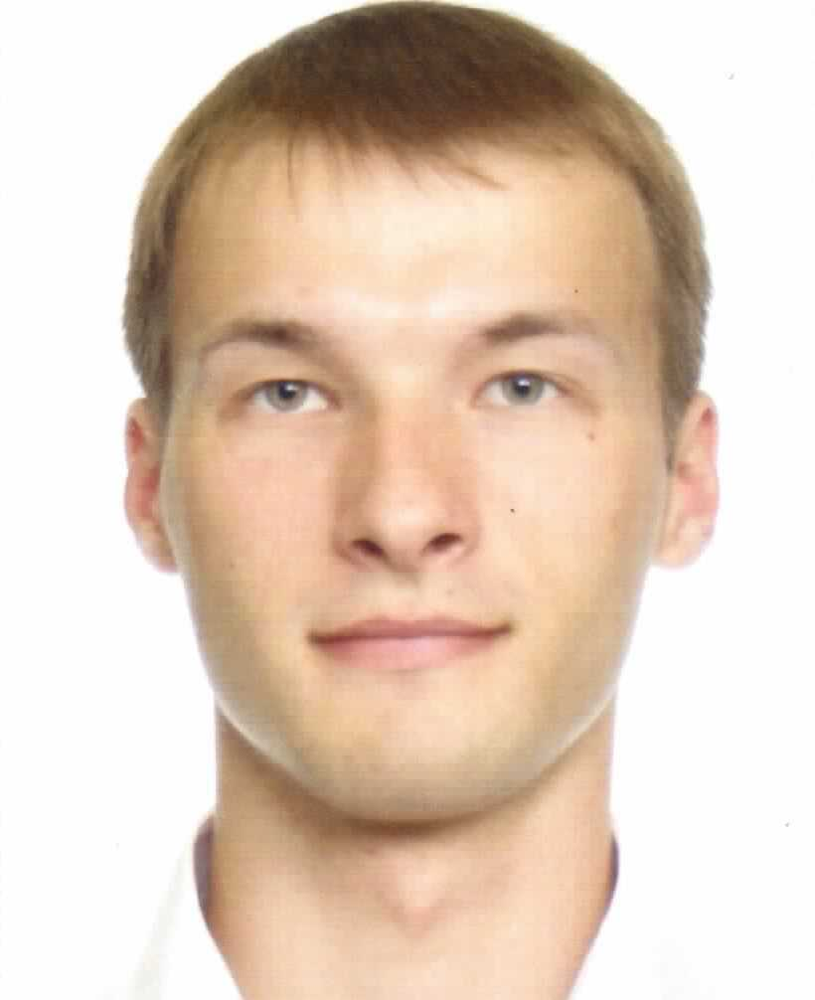

Machine Learning Engineer, Data Scientist
- Языки
-
Русский (родной)
Английский (С1)
Португальский (С1)
Французский (В1)
- Образование
-
МФТИ (ГУ), факультет физической и квантовой электроники
Уровень образования: аспирантура
Период обучения: 2014 - 2018
Направление: физическая электроника
МФТИ (ГУ), факультет физической и квантовой электроники
Уровень образования: магистратура
Период обучения: 2012 - 2014
Направление: прикладная математика и физика
МФТИ (ГУ), факультет физической и квантовой электроники
Уровень образования: бакалавриат
Период обучения: 2008 - 2012
Направление: прикладная математика и физика
- Навыки
-
- Python 3.6
- R (основы статистического анализа данных и эконометрики)
- HTML (основы)
- C, C# (основы)
- LaTEX
- Дополнительное образование
-
- Ближайшие цели
-
- профессионально освоить Python, R
- научиться программировать на С++, JavaScript
- Опыт работы
-
АО "НИИМЭ" научный сотрудник, 08.2015 - н. вр.
- отрисовка печатных плат в Altium Designer
- научные расчёты (ab initio) в среде Quantum Espresso
- написание научно-технических отчетов
- проведение патентных исследований
- проведение испытаний в рамках НИОКР
АО "НИИМЭ" инженер-конструктор, 02.2013 - 07.2015
- проведение патентных исследований
- написание научно-технических отчетов
- постановка экспериментов в лаборатории
- теоретические расчёты параметров приборов
АО "НИИМЭ" инженер-конструктор 3 кат., 03.2013 - 01.2013
- написание научных обзоров в области твердотельной памяти
- постановка экспериментов в лаборатории
- теоретические расчёты параметров приборов
- Проекты
-
Проект "Небоскреб Фонд перспективных исследований, 09.2016 - н.вр.
Разработка технологии создания гибридных многофункциональных 3D сборок
ОКР "Микрос-8" Минпромторг, 03.2014 - н.вр
Разработка высокостабильного твердотельного датчика угловых скоростей
НИР "Стимул" Минпромторг, 03.2014 - 10.2016
Разработка технологии энергонезависимой памяти FeRAM и ReRAM
ОКР "Микрос-7" Минпромторг, 03.2013 - 07.2015
Разработка твердотельного акселерометра на базе пьезоэлектрических сенсорных элементов
- Увлечения
- Математика во всех её проявлениях, научпоп, аргентинское танго, португальский язык, философия, литература